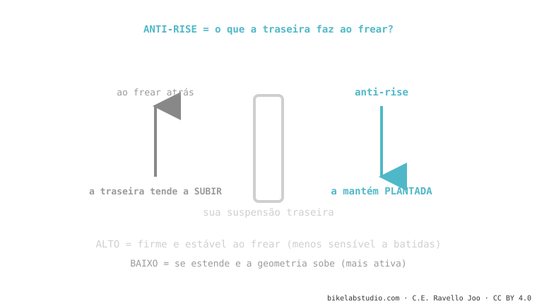

O anti-rise é o primo do anti-squat, mas para frear. Ao apertar o freio traseiro, o seu peso vai para frente e a traseira tende a subir (estender). O anti-rise mede o quanto o projeto contraria isso. Alto = a bike fica plantada e estável, mas a suspensão fica menos sensível ao frear; baixo = mais ativa e com mais tração, mas a geometria se mexe mais. É parte da cinemática de suspensão.
Se a sua bike se sente "estranha" ou endurece justo quando você freia numa descida cheia de batidas, não é coincidência. É o anti-rise fazendo o seu trabalho — para o bem ou para o mal conforme o projeto.
Sentiu como, ao frear forte na descida, uma bike "crava" firme e outra parece levantar o rabo? Essa diferença é o anti-rise.
Ao frear com o freio traseiro, a sua massa se transfere para frente (como quando você freia num carro e vai em direção ao para-brisa). Essa transferência tende a esticar a suspensão traseira. O anti-rise é o quanto o projeto resiste a essa extensão.

Nem alto nem baixo é "melhor": um projeto de DH busca estabilidade (tende a mais anti-rise), um de trail busca que a roda não pare de copiar o terreno ao frear (costuma ir mais baixo). É uma decisão de caráter.
Diferente do leverage ratio, o anti-rise não depende da mola nem do amortecedor: sai puramente da geometria — onde estão os pivôs e por onde passa a linha de força do freio. Por isso é uma propriedade fixa do quadro que você não muda com ajustes; vem decidida de fábrica.
O quanto o projeto evita que a traseira suba ao frear com o freio traseiro. O anti-squat da frenagem.
Depende: alto = estável mas menos sensível freando; baixo = ativo e com tração mas a traseira se mexe mais. Equilíbrio.
Diga o modelo e como você sente; te dizemos se é anti-rise de projeto ou ajuste. Fale com a gente pelo WhatsApp